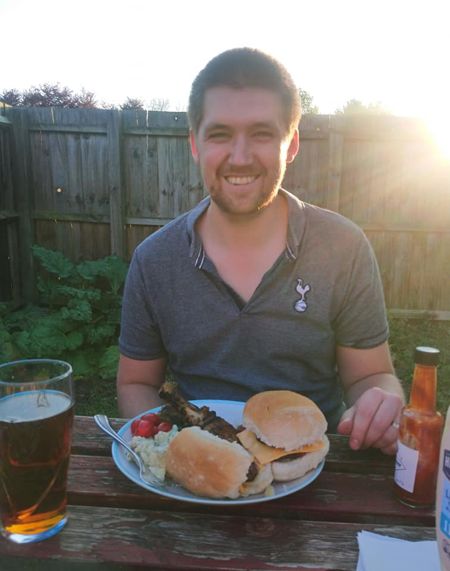

Martin Sexton

Background
I grew up in Suffolk, near Ipswich and went to Loughborough University to study Computer Science. My favourite parts of the course were the web units where I learnt HTML, CSS, PHP and JavaScript and also learned how to store data in databases.